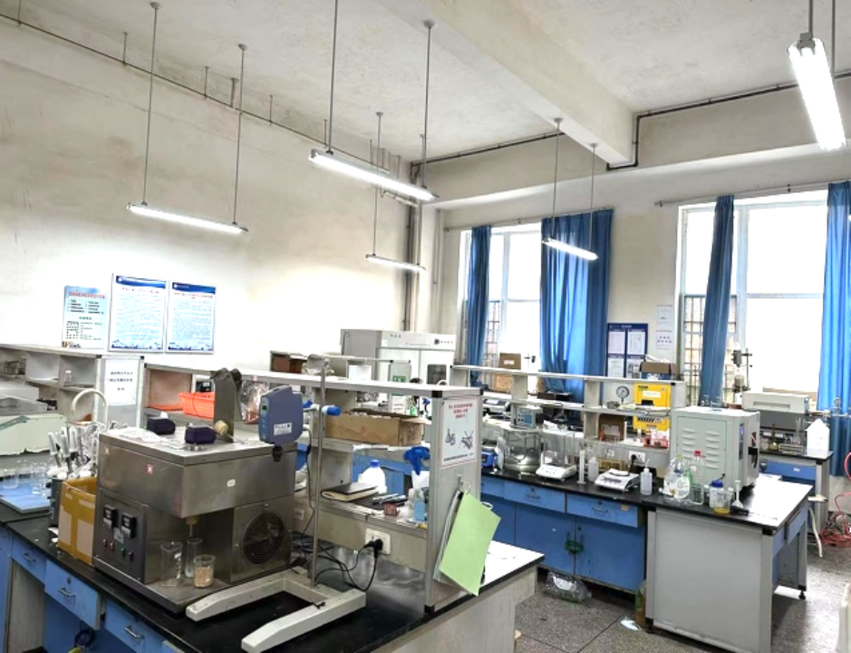
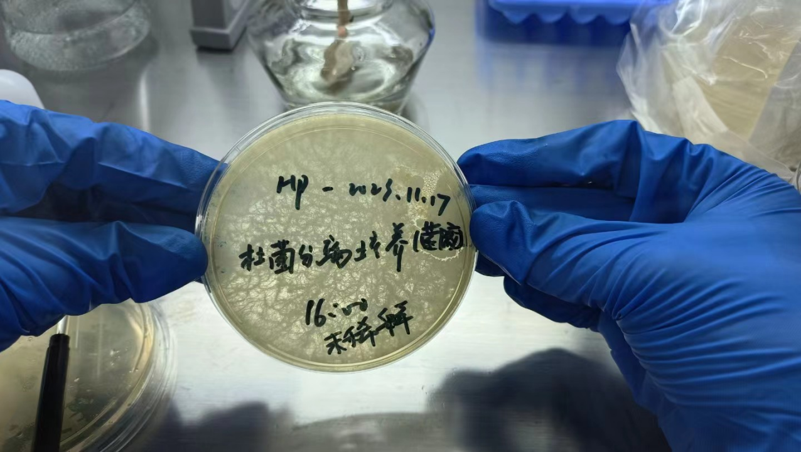

钟诚课题组（智慧化学与生物学）
在能源转型和碳中和的背景下，我们的研究团队致力于在多组学及其应用领域进行研究，涵盖化学、生物学和信息学等多个学科。我们的目标是推动油气田清洁开发和数字化管理，提高能源采收和传输效率，减少污染，缓解碳排放。我们研究的成果广泛应用于与能源和环境可持续发展相关的工程实践中。目前，我们团队的主要研究方向包括：
- 复杂水环境管理与风险阻控
- 功能性药剂与工作液设计与工程应用
- 高维数据分析与信息技术研发
在能源转型和碳中和的背景下，我们的研究团队致力于在多组学及其应用领域进行研究，涵盖化学、生物学和信息学等多个学科。我们的目标是推动油气田清洁开发和数字化管理，提高能源采收和传输效率，减少污染，缓解碳排放。我们研究的成果广泛应用于与能源和环境可持续发展相关的工程实践中。目前，我们团队的主要研究方向包括：
请参阅我们的完整出版物列表。
精选论文包括：
|
钟 诚, Ph.D. [个人简历]
副教授 课题组负责人，香港研资局学者，中国南海科考成员，《石油与天然气化工》青年编委，以第一作者/通讯作者在Environmental Science & Technology, Environmental Microbiology, SPE Journal等SCI期刊发表论文20余篇。 Email：chengzhong@swpu.edu.cn |
|
|
邓亚（2023.09-至今）
硕士研究生 借助人工智能技术，进行生物信息数据建模与软件开发，实现对微生物腐蚀行为的预测。 Email：202321000302@stu.swpu.edu.cn |
|

|
伏银梅（2023.09-至今）
硕士研究生 通过利用生物信息技术，开发基于天然产物的表面活性剂，用于油田开发中的驱油过程。 Email：202321000330@stu.swpu.edu.cn |
|
何平（2023.09-至今）
硕士研究生 利用高通量测序和化学分析技术，研究石油在土壤和地下水中对生态环境的影响以及相关的污染修复策略。 Email：202321000320@stu.swpu.edu.cn |
|
金盼晴（2023.01-2023.06）
本科2019级环境工程 本科毕业论文：基于大尺度生物信息挖掘的β-甘露聚糖酶开发研究 |
|
|
刘洲同（2023.01-2023.06）
本科2019级环境工程，现硕士就读于中国石油大学（华东） 本科毕业论文（优秀）：页岩气水循环系统特征微生物标记基因组学研究 |
| 计算化学与计算生物学办公室 | 应用化学办公室 |
微生物与分子生物实验室

|
应用化学实验室  |
| 实验活动1 |  |
|
实验活动2 |
|
|
实验活动3 |
|
课题组长期招收研究生，专注于培养在科研机构、政府机关和石化行业等领域中能担任专家和领导者角色的人才，我们是一个多元化团队，无论对湿实验和干实验感兴趣的同学都能在此实验室获得训练，欢迎具有环境、地质、化学等多学科背景，并擅长计算机与数学的同学加入我们。我们期待申请者对科研充满热情，具备创新和灵活的思维方式，拥有良好的的英语能力（CET6、托福85，雅思6.5），拥有良好的沟通和表达能力，能够清晰地表达自己的观点，能积极参与团队成员之间的交流与合作。
注：外国申请者请先向西南石油大学国际合作与交流处咨询。
地址：中国，四川省，成都市，新都区，新都大道8号，西南石油大学，明德楼A309
西南石油大学（Southwest Petroleum University），简称“西南石大”（SWPU），主校区坐落于四川省成都市新都区。在这里，你不仅可以领略蓉城的包容文化，还能感受历史悠久的风土人情。这里有国宝熊猫，有璀璨的人文风光，如金沙遗址，锦里，宽窄巷子等，有绝美的自然风光，如四姑娘山、九寨沟、黄龙等，还有钵钵鸡，火锅等美食。
成都双流机场出发
在双流机场1航站楼站乘坐地铁10号线(太平园方向)，至太平园站下车，换乘地铁3号线(成都医学院方向)，在石油大学站下车(D口出)，沿大学路步行到达学校东一门。
成都天府机场出发
步行538米，在天府机场1号2号航站楼站乘坐地铁18号线(火车南站方向)，至火车南站下车，站内换乘地铁1号线(韦家碾方向)，至省体育馆站下车，站内换乘地铁3号线(成都医学院方向)，在石油大学站下车(D口出)，沿大学路步行到达学校东一门。
成都火车东站出发
步行600米，乘坐地铁7号线(外环)，在驷马桥站下车，站内换乘地铁3号线(成都医学院方向)，在石油大学站下车(D口出)，沿大学路步行到达学校东一门。
姓名A-Z
In the context of energy transition and carbon neutrality, our research group is dedicated to conducting studies in the fields of multiple omics and their applications, including chemistry, biology, and information. We aim to advance clean development and digital management in oil and gas fields, enhancing energy recovery and transmission efficiency, reducing pollution, and mitigating carbon emissions. The outcomes of our research are extensively applied in engineering practices related to susatainable development of energy and the environment. Currently, the primary research directions of our group include：
Please refer to the full list.
Selected Paper：
|
钟 诚, Ph.D. [Curriculum Vitae]
Associate Professor Principal Investigator, RGC Research Fellow, Member of South China Sea Scientific Expedition, Young Editorial Board Member of Petroleum and Natural Gas Chemical Engineering, Published over 20 papers as the first author/corresponding author in SCI journals, including Environmental Science & Technology, Environmental Microbiology, SPE Journal. Email：chengzhong@swpu.edu.cn |
|
|
Ya DENG（2023.09-）
Master Student Utilizing artificial intelligence technology, we engage in the modeling of biological information data and software development to achieve the prediction of microbiologically influenced corrosion behavior. Email：202321000302@stu.swpu.edu.cn |
|
|
|
Yinmei FU（2023.09-）
Master Student By utilizing bioinformatics, we aim to develop surfactants based on natural products for enhanced oil recovery processes in oilfield development. Email：202321000330@stu.swpu.edu.cn |
|
Ping HE（2023.09-）
Master Student Utilizing high-throughput sequencing and chemical analysis techniques, we investigate the impact of petroleum on the ecological environment in soil and groundwater, along with relevant pollution remediation strategies. Email：202321000320@stu.swpu.edu.cn |
|
Panqing JIN（2023.01-2023.06）
2023 Undergradate of Environmental Engineering Undergraduate thesis: Development of β-mannanase based on large-scale bioinformation mining |
|
|
Zhoutong LIU（2023.01-2023.06）
2023 Undergradate of Environmental Engineering, current position: China University of Petroleum (East China) Undergraduate thesis (excellent) : Microbial marker genomics study on characteristics of shale gas water circulation system |
| Office of Computational Chemistry and Computational Biology | Office of Applied Chemistry and Biology |
|
Microbiology and Molecular Biology Laboratory
|
Applied Chemistry Laboratory |
| Lab Photo 1 | |
|
Lab Photo 2 |
|
|
Lab Photo 3 |
|
Please refer to more photos.
2023.12.24 Christmas dinner
2023.10.27 Sichuan hotpot
2023.06.26 High-tech enterprises visit
The research group is actively recruiting graduate students with a focus on cultivating talents who can take on expert and leadership roles in research institutions, government agencies, and the petrochemical industry. We are a diverse team, welcoming students interested in both wet and dry experiments to receive training in this laboratory. Individuals with backgrounds in environmental science, geology, chemistry, and proficiency in computer science and mathematics are encouraged to join us. We seek applicants who are passionate about research, possess innovative and flexible thinking, have excellent English proficiency (CET6, TOEFL 85, IELTS 6.5), effective communication and presentation skills, and the ability to express their views clearly. Applicants should actively engage in team communication and collaboration.
Note: Foreign applicants are advised to consult with the International Cooperation and Exchange Office of Southwest Petroleum University before applying.
Address: A309, Mingde Building, Southwest Petroleum University, No. 8 Xindu Avenue, Xindu District, Chengdu, Sichuan, China
Southwest Petroleum University (SWPU), is located in Xindu District, Chengdu City, Sichuan Province. Here, you can not only appreciate the inclusive culture of Chengdu but also experience the rich history and local customs. There are national treasures like pandas, vibrant cultural landscapes such as the Jinsha Site, Jinli, and Kuanzhai Alley, as well as breathtaking natural scenery including Mount Siguniang, Jiuzhaigou Valley, Huanglong, and delicious local foods like Bobo Chicken and hotpot.
Departing from Chengdu Shuangliu Airport：
At Shuangliu Airport Terminal 1 station, take Metro Line 10 (direction of Taiping Yuan), get off at Taiping Yuan Station, transfer to Metro Line 3 (direction of Chengdu Medical College), get off at University of Petroleum Station (Exit D), walk along University Road to the east gate of the campus.
Departure from Chengdu Tianfu Airport:
Walk 538 meters, take subway Line 18 (toward the South Railway Station) at Tianfu Airport Terminal 1 and get off at the South Railway Station, transfer to subway Line 1 (toward Weijia Roll), get off at Provincial Gymnasium Station, transfer to subway Line 3 (toward Chengdu Medical College), get off at University of Petroleum Station (Exit D), walk along University Road to the East gate of the campus.
Chengdu East Railway Station
Walk 600 meters, take Subway Line 7 (outer ring), get off at Sima Bridge Station, transfer to subway Line 3 (direction of Chengdu Medical College), get off at University of Petroleum Station (Exit D), walk along University Road to the east gate of the campus.
Name A-Z
|
中国四川省成都市新都区新都大道8号 chengzhong@swpu.edu.cn • 191-1358-3760 |
| Ⅰ. 学术任职 | |
| 2024-至今 副教授 | 化学化工学院，西南石油大学，中国 |
| 2023–至今 讲师 | 化学化工学院，西南石油大学，中国 |
| 2022–2023 香港研资局博士后 | 海洋系，香港科技大学，中国香港 |
| 2021–2022 博士后 | |
|
|
|
| II. 访问职位 | |
| 2019–2020 访问学者 | 环境学院，清华大学，中国 |
|
|
|
| III. 学术兼职 | |
| 2022–至今 《石油与天然气化工》 首届青年编委 | |
| 2022–至今 Frontiers in Environmental Chemistry 首届青年编委 | |
| Environmental Science & Technology，Water Research 等9个国际知名学术期刊担任审稿人 | |
| 2017–2020 博士 | 地球与大气科学学院，阿尔伯塔大学， 加拿大 |
| 2016–2017 硕士 | 地球与大气科学学院，阿尔伯塔大学， 加拿大 |
|
|
|
| 2014–2015 硕士 | 地球与大气科学学院， 阿尔伯塔大学，加拿大 |
|
|
|
| 2010–2014 学士 资源勘查工程 (校级优秀毕业生) | 西南石油大学，中国 |
| 2023 | 教师资格岗前培训优秀示范课学员（四川省高校师资培训中心） |
| 2019级环境工程本科毕业设计优秀指导教师 | |
| 2022 | 香港特区政府研资局博士后研究资助 |
|
|
|
| 2017 | 阿尔伯塔大学 J Gordin Kaplan Student 奖学金 |
| 阿尔伯塔大学 GSA Academic Travel Grants 奖学金 | |
| 阿尔伯塔大学博士全额奖学金 | |
| 2016 | 阿尔伯塔大学硕士全额奖学金 |
| 2014 | 西南石油大学校级优秀毕业生 |
2023
2022
2021
2020
2019
2019
2013
2012
2023.10.10 论文写作分享会
2023.06.26 高新企业参观交流
2023.10.20 中澳LCA线上研讨会
2023.10.27 四川火锅美食
2023.10.27 四川火锅美食
SCI期刊
中文期刊